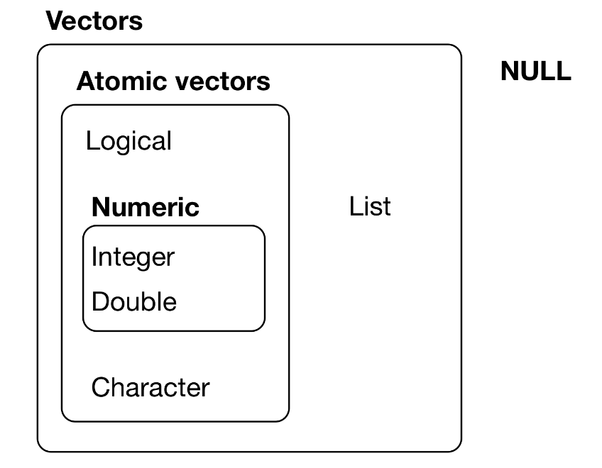
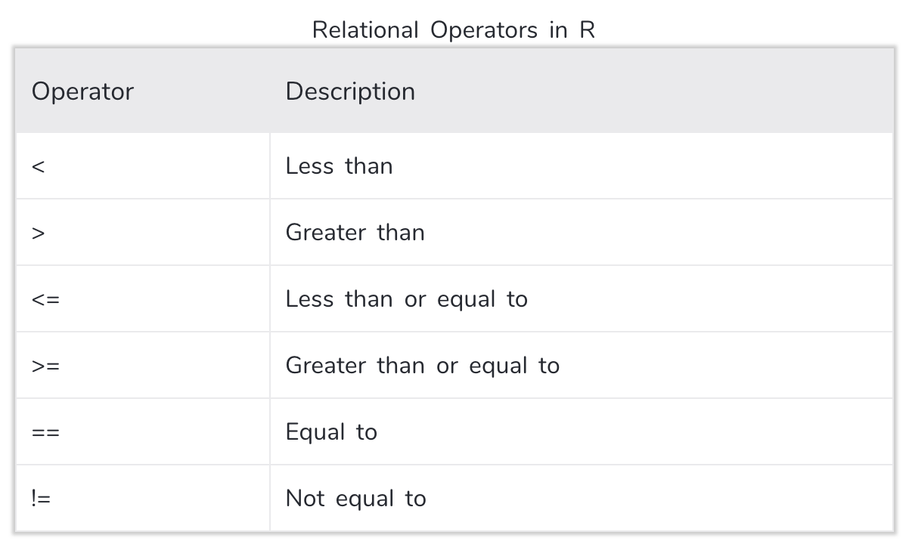

2 Vectors and Lists
2.1 All About Vectors
As a reminder: code output is not shown. It is assumed that you will type all the code into the Console in RStudio, both to actively engage with the material and to actually see the output.

Atomic vectors are homogeneous, i.e., all elements of the vectors are of the same type.
The types of atomic vectors (or just vectors) are:
| Type | Description |
|---|---|
double |
double-precision floating-point numbers (8 bytes per element) |
integer |
integer numbers (4 bytes per element) |
logical |
TRUE and FALSE |
character |
individual strings (at 1 byte per individual character within each string) |
complex and raw |
(not covered here) |
Note: the integer and double types are collectively (and at times confusingly) dubbed numeric. (Confusingly because one can cast to a numeric type, which is equivalent to casting to double.)
Let’s show the various ways in which one can initialize a vector (in this case, of integers) of length five:
| Command | Comment |
|---|---|
x <- c(0,0,0,0,0) |
c = “collection” or “container” |
x <- rep(0,5) |
rep = “repeat” |
x <- vector("integer",5) |
|
x <- integer(5) |
|
x <- seq(1,5,by=1) |
seq = “sequence” |
x <- 1:5 |
steps by 1 |
Note that one can use all six of these functions to initialize numeric vectors, and the first four to initialize those of mode logical or character, as with, e.g.,
vector("logical",5)
character(5)Note: there is no such thing as a “scalar” in R, i.e., x <- 1 defines a double-precision vector of length 1.
To determine the type of a vector:
x <- c(1,0,3,2)
typeof(x)To determine the number of elements in a vector:
length(x)To display the \(n^{\rm th}\) element of a vector (here, the first one…and
note that R counts from 1, not 0):
x[1]To explicitly cast from one type to another:
as.character(x)
as.logical(x)To sort a vector in ascending order, and to retrieve the sorted vector indices:
x
sort(x)
order(x)To reverse the order of the elements in a vector:
rev(x)
If you apply a relational operator to a vector, the output will be a logical vector:
set.seed(101)
x <- rnorm(10)
x > 0VERY IMPORTANT: if you apply a logical vector of length \(n\) to a vector of length \(n\), then only the elements of the second vector associated with the value TRUE will be displayed! For instance:
x
x[x>0]The output from relational operators can be combined using the logical and operator & or the logical or operator |:
y <- x>0 & x<0.5
x[y]
y <- x<0 | x>0.5
x[y]To invert a logical vector, use the ! operator:
x[!y]To determine how many values in your vector satisfy a condition, combine one or more relational operators with the sum() function:
sum(x>-0.5&x<0)To determine which elements of the original vector satisfy a condition, combine one or more relational operators with the which() function:
which(x>-0.5&x<0)Another means by which to subset a vector is to apply the output of the which() function. Note how adding a minus sign changes the output!
w <- which(x<0)
x[w]
x[-w]As a final note:
NAmeans “Not Available” and is the preferred way inRto denote missing dataNaNmeans “Not a Number” and denotes, e.g, 0/0Infmeans “Infinite” and denotes, e.g., 1/0
To determine whether vector elements are, e.g., NA, we can use the is.na(), is.nan(), and/or is.infinite() functions. Each returns a logical vector.
x <- c(1,NA,3)
is.na(x)
x[!is.na(x)]2.1.1 All About Vectors: Lab Exercises
Please download and work through the following R Markdown file:
The solutions are provided here.
2.2 All About Lists
As can be seen above, a list is not an atomic entity; it may be thought of as a (perhaps heterogeneous) collection of atomic vectors:
x <- list(1:5,c("a","b"))
xA list in R is like a dictionary in Python.
For reasons that will become apparent soon, it is perhaps best to think of a list as a “table,” with each separate vector in the list being a “column” within that table. (Yes, the number of rows can vary from column to column, but work with me here.) To access a “column,” you use “double-bracket” notation:
x[[2]]To access a particular “row” in a given column, you can tack on its number:
x[[1]][3]Dealing with double brackets can be tiresome. We can assign names to each of the list elements as follows:
names(x) <- c("a","b")
xWe can also change the name of any one of the elements like so:
names(x)[1] <- c("c")
xWhen you initialize a list, you can name each of the vectors and then use the names to access list elements. Note the use of the dollar sign in the third line below; it is a useful shorthand.
x <- list(u=1:5,v=c("a","b"))
x[["u"]][3]
x$u[3]A data frame is a list whose entries all have the same number of elements.
x <- data.frame(u=1:2,v=c("a","b"),w=c(TRUE,FALSE))
xNote that when we output a data frame, row numbers are added.
Are we sure this is a list? Yes…if we check the variable type:
typeof(x)
class(x)A matrix may be thought of as a data frame whose columns are all vectors of the same type. However, operations applied to a matrix are fundamentally different from those applied to a list.
x <- matrix(1:6,nrow=2)
x # the matrix filled column-by-column (column-major order)
x[[1]] # doesn't work like you'd think it should
x[2,1] # works: row first, then column2.3 Handy Vector Functions
A vector, like a list, can have names and attributes:
x <- c(a=1,b=2,c=3)
attr(x,"Creator") = "Peter Freeman"
xIf you want to, e.g., strip the names and attributes off, even temporarily, you can use as.vector():
as.vector(x)If you have a list, and want to concatenate the contents of each list element into a single vector, do not use as.vector(), but rather use unlist():
x <- list(c("a","b"),1:3)
x
unlist(x) # note: casting occurs to make the vector elements a single type!You’ve learned about sort(). Here we will show an example of why order() is also important. order() returns a numeric vector showing vector elements and not vector values (which is what sort() returns):
x <- c(5,3,7,1) # the 4th element is the smallest, then the 2nd element, then the 1st, then the 3rd
order(x)Now, let’s say you have a pair of vectors of equal length (e.g., two columns in a data frame), and you wish to sort one vector but keep the association between the vectors intact:
x <- c(9,5,7,6) # we have four pairs: 9 with 1, 5 with 2, 7 with 3, 6 with 4
y <- 1:4
sort(x) # the association between vectors is broken
sort(y)
o <- order(x)
x[o] # the association between vectors remains intact
y[o]In short: sort() is useful when sorting one vector, and order() is useful for sorting an associated group of vectors (read: a data frame) based on the entries in one of vectors (read: a column).
Let’s say you have a vector that has many repeated values (e.g., the index of a datum’s leaf in a classification tree). To determine the set of unique values, use the unique() function:
set.seed(999)
x <- sample(c(3,6,12,44),100,replace=TRUE) # assume we don't actually know the input values
unique(x)As you can see, the values are sorted according to when they first appeared in the vector. So sometimes it is useful to redirect the output from unique() to the sort() function:
sort(unique(x))If you not only want to see what the unique values are, but how many times each occurred, use a table():
table(x) # this will actually sort the values for you, unlike uniqueTo follow up on a previous topic: the output of table() is of class table, which creates a structure that includes the data frequencies, uses the data values as names, and carries around attributes (e.g., dim, the number of data values). As a reminder, if you just want the frequencies…
as.vector(table(x))Perhaps you wish to bin the values in a vector. You can do this with a combination of table() and the function findInterval(). For the latter, you pass in a vector of bin boundaries and a data vector and what comes out is a vector of bin numbers. For instance:
x <- 1:10
findInterval(x,c(3,7)) # [1,3) -> bin 0, [3,7) -> bin 1, [7,10] -> bin 2As stated, it can be useful to summarize this output in a table. For instance, if we sample 10,000 data from a standard normal, we expect about 68.27% of the values to lie between -1 and 1.
set.seed(666)
x <- rnorm(10000)
table(findInterval(x,c(-1,1)))Pretty good!
Let’s define two vectors:
u <- c(1:5,5,5)
v <- 3:7First, we can apply set operations to these vectors. For instance, to merge the vectors:
union(u,v) # NOTE: this only shows the *unique* values in the union...the 5 is not replicated!And if there is a union, there must be an intersect(ion):
intersect(u,v) # NOTE: as above, only the *unique* values are shownWhat values are in the vector u that are not in the vector v?
setdiff(u,v) # asymmetric: setdiff(v,u) gives different answer!Do the vectors contain the same values (regardless of the number of times values are replicated)?
setequal(u,v)
setequal(u[-(1:2)],v[1:3])There are two principal ways to determine if elements of one vector are contained in another.
is.element(u,v): this returns a logical vector. The \(i^{\rm th}\) element of this vector isTRUEifu[i]is an element ofv, andFALSEotherwise.match(u,v): this returns a numeric vector. The \(i^{\rm th}\) element of this vector isNAby default ifu[i]is not an element ofv. Otherwise, it is the index of the element ofvthat provides the first match tou[i].
u
v
is.element(u,v) # the binary operator `%in%` is equivalent: `u %in% v`
match(u,v)2.3.1 Handy Vector Functions: Lab Exercises
Please download and work through the following R Markdown file:
The solutions are provided here.
2.4 Control-Flow Constructs
The phrase “control-flow constructs” is one that R’s creators use to denote if and while and such. You can find a full list of control-flow constructs by typing ?Control in the RStudio console. The constructs are among the reserved words in R’s command-line parser (meaning you cannot use them as variable names). You can find a list of reserved words by typing ?Reserved in the console.
xx <- 2
if <- 2(Important note: if you want to knit an R Markdown file which has a buggy code chunk, add error=TRUE in the first line of the chunk.)
Here are basic examples of the use of the if-else construct:
x <- 2
if ( x == 2 ) print(x) # one line, no curly brackets
if ( x == 2 ) { # use curly brackets to enclose multiple commands over several lines
print(x)
}if ( x == 2 ) { # same idea, but now with an "else" thrown in
print(-x)
} else {
print(x)
}(Note the ==, which is a relational operator, and returns TRUE or FALSE. Use of a single = will lead to an exception being thrown.)
An if-else construct will evaluate until the first time the quantity in parentheses evaluates to TRUE. Below, x = 2 and x > 0, but foo is not printed.
if ( x == 2 ) {
print(-x)
} else if ( x > 0 ) {
print("foo")
} else {
print("bar")
}One can combine conditions within an if statement using && (for “and”) or || (for “or”).
IMPORTANT: the difference between, e.g., && and & is that the latter returns a logical vector that can have a length greater than 1 and the former returns a logical vector of length 1.
u <- c(TRUE,FALSE,TRUE)
v <- c(TRUE,TRUE,FALSE)
u & v
u && vu && v only does a comparison between the first elements of u and v and ignores any subsequent elements.
Long story short: if you use && in an if statement, make sure what is on either side of the && are vectors of length one. Otherwise you may not get the behavior you expect when you run your code.
A compressed version of an if-else construct is provided by the ifelse() function:
ifelse(test,yes,no) # don't run this!which means “if the object test returns TRUE, do whatever is specified by yes, otherwise do whatever is specified by no.” For example:
x <- 2
ifelse(x==2,TRUE,FALSE)2.4.1 Control-Flow Constructs: Lab Exercises
Please download and work through the following R Markdown file:
The solutions are provided here.
2.5 Loops
A for() loop repeatedly runs a block of code while (usually) incrementing the value of a counter variable. Its typical structure is
for ( <var name> in <min counter value>:<max counter value> ) {
<do stuff>
}Here we compute \(x^2\) for \(x \in [1,10]\):
x.sq <- rep(NA,10)
for ( ii in 1:10 ) { # Why ii and not i? Easier to search for when debugging large code bases.
x.sq[ii] <- ii^2
}
x.sqNOTE: one should utilize vectorization when one can. For instance, if \(x\) is an \(n\)-element vector, and \(y\) is an \(n\)-element vector, then, e.g., \(x+y\) is an \(n\)-element vector that contains the sums of the first elements and of the second elements, etc. In other words, one does not have to loop over vector indices to apply operations to each element. The above example is thus purely academic; one would really want to code this as x.sq = (1:10)^2. A decently good rule to follow is, when in doubt, code a for() loop first, get your full code base working, then see where you might be able to apply vectorization (while always checking that your output is unchanged as you update code).
In the example above, the counter vector is 1:10. You can specify this in other ways:
for ( ii in seq(1,10,by=1) ) { # More general than 1:10; allows steps of size > 1.
x.sq[ii] <- ii^2
}
x.sqOr you can specify that you are to step along each of the indices of \(x\) in order:
for ( ii in seq_along(x.sq) ) { # No need to specify bounds; good if you change the length of x.sq
x.sq[ii] <- ii^2
}
x.sqThe counter vector need not be numeric.
str.vec = c("Pirates","Steelers","Penguins")
for ( str in str.vec ) {
not <- ""
if ( str == "Pirates") not <- "not"
cat("The",str,"will",not,"win the championship this year.\n")
}A while() loop repeatedly runs a block of code until some condition is no longer true. The usual structure here is
while ( <condition> == TRUE ) {
<do stuff and possibly change condition to FALSE>
}For example:
continue <- TRUE
x <- 1
while ( continue == TRUE ) { # the "== TRUE" is actually not necessary here
if ( x <= 5 ) {
cat(x," ")
} else {
continue <- FALSE
}
x <- x+1
}When should you use for() and when should you use while()?
for()is good when you know what indices you will iterate over in advancewhile()is good when you know the condition that needs to be fulfilled for the looping to stop, but you don’t know when it will be fulfilled (so, e.g., the example on the last slide is not necessarily the best example to display forwhile(), since we knew we were going to increment from \(x = 1\) to \(x = 5\) in advance)
NOTE: every for() loop can be replaced with a while() loop, but not vice-versa.
- If at some point in a loop you want to skip the remaining commands and return to the loop’s beginning, use
next. - If at some point in a loop you want to skip the remaining commands and exit the loop entirely, use
break.
for ( ii in 1:10 ) {
if ( ii >= 6 ) break
if ( ii >= 6 ) print("oops!")
if ( ii >= 3 ) next
print(ii)
}
iiThe loop skipped the final print() statement when ii \(\geq 3\), hence we only see the numbers 1 and 2 output initially, and then we exited the loop when ii = 6 (we know this because “oops!” was never printed).
One can, in principle, create an infinite loop that will continue until a break is issued:
while ( TRUE ) { # Because TRUE == TRUE, always
input <- readline("Name the best prof at CMU!")
if ( input == "Freeman" ) break
print("Try again.")
}NOTE: a repeat block will behave the same way. See ?Control for more details.